Přednáška představí sadu šablon pro nástroj TeX4ht, který slouží k převodu LaTeXových dokumentů do HTML. Tyto šablony výrazně usnadňují publikaci různých typů dokumentů na webu a přinášejí moderní možnosti zpracování a automatizace.
První šablona je určena pro převod knižních dokumentů do webové podoby. Umožňuje rozdělení textu do jednotlivých kapitol s automaticky generovanou navigací a podporou responzivního designu, takže je výsledek dobře čitelný i na mobilních zařízeních.
Druhá šablona slouží k tvorbě staticky generovaných blogů. Každý příspěvek je psán jako samostatný LaTeXový dokument, který je pomocí TeX4ht převeden do HTML. Následně jsou tyto články zpracovány statickým generátorem webů, jako je například Jekyll, který se postará o sestavení celého blogu, vytvoření rozcestníků, archivů a další navigace.
Třetí šablona je zaměřena na převod prezentací vytvořených v prostředí Beamer do formy tzv. handoutů – přehledových materiálů pro posluchače. Výsledkem je čitelný a dobře strukturovaný webový dokument vhodný pro sdílení po přednášce.
Všechny šablony jsou navrženy tak, aby fungovaly v rámci GitHub Actions. To znamená, že dokumenty mohou být automaticky zkompilovány a publikovány online pokaždé, když dojde ke změně v repozitáři. Tento přístup zajišťuje, že je webová verze dokumentu vždy aktuální.
Šablony pro
TeX4ht samotný je především balíček, který redefinuje příkazy jiných balíčků tak, aby vkládaly tagy výstupních formátů. Vždy se kompiluje do DVI výstupu, který se poté zpracovává dalšími nástroji, které vytvoří soubory ve výstupním formátu, CSS soubor, nebo obrázky. Části DVI výstupu lze konvertovat na obrázky ve formátu PNG nebo SVG. To se využívá pro podporu TikZ nebo PSTricks.
Více informací o TeX4ht naleznete na oficiálních stránkách a v dokumentaci.
Příklad LaTeX kódu
Příliš {\bfseries žluťoučký} \textit{kůň}
Výstup v HTML kódu
Příliš <span class=’cmbx-10’>žluťoučký </span> <span class=’cmti-10’>kůň</span>
Výstup v prohlížeči
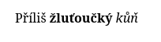
V předešlém příkladu TeX4ht převede LaTeXové příkazy pro tučné
a kurzívní písmo na HTML tagy. Díky tomu, zpracovává DVI soubor, používá
informace o použitých fontech a může tak podporovat i příkazy, které by jinak šly
podporovat jen stěží, jako \bfseries použitý v příkladu.
Příklady kompilace pomocí TeX4ht
Kompilace do HTML:
$ make4ht -ld output_dir soubor.tex
Kompilace do EPUB3:
$ tex4ebook -f epub3 soubor.tex
Pro kompilaci dokumentů pomocí TeX4ht se používají dva hlavní nástroje: make4ht a tex4ebook. tex4ebook je starší nástroj, který se používá pro konverzi LaTeXových dokumentů do formátů pro elektronické knihy, jako je například EPUB. make4ht vznikl později a je určen pro konverzi LaTeXových dokumentů do HTML a dalších formátů, jako jsou ODT nebo JATS XML.
Přepínače u obou nástrojů můžeme spojovat, pokud neočekávají argumenty.
Volba -ld outptu_dir je tedy zkratkou pro -l -d output_dir.
Konfigurace výstupního formátu
Konfigurační soubor pro TeX4ht
\Preamble{xhtml,mathml,mathjax}
\Configure{textit}{\HCode{<i>}\NoFonts}{\EndNoFonts\HCode{</i>}}
\begin{document}
\EndPreamble
Kompilujeme pomocí:
$ make4ht -c config.cfg soubor.tex
HTML výstup
Příliš <span class=’cmbx-10’>žluťoučký </span><i>kůň</i>
Konfigurační soubor umožňuje redefinovat výstup pro příkazy podporované
TeX4ht. V tomto příkladu se jmenuje config.cfg a voláme ho pomocí volby
-c. Příkaz \Configure umožňuje vkládat obsah do háčků, definovaných
v konfiguračních souborech TeX4ht pro jednotlivé balíčky.
V tomto případě využíváme konfiguraci pro textit, která využívá dva
háčky – jeden vkládá před obsah příkazu \textit, druhý za něj. Tagy
vkládáme pomocí příkazu \HCode. Abychom zabránili vložení tagů <span>
pro aktuální font, použijeme příkaz \NoFonts, který vypíná zpracování
fontů. Na konci konfigurace je třeba opět zpracování fontů zapnout pomocí
\EndNoFonts.
Struktura konfiguračního souboru
\Preamble{xhtml,<volby tex4ht>}
<konfigurace>
\begin{document}
<pozdní konfigurace>
\EndPreamble
Více informací o konfiguračních souborech TeX4ht naleznete v kapitole o konfiguracích v dokumentaci TeX4ht.
$ make4ht soubor.tex "mathml,mathjax"
\Preamble v konfiguračním souboruPříklady voleb
Povolení rozšíření
$ make4ht -f html5+název_rozšíření soubor.tex
Zakázání rozšíření
$ make4ht -f html5-název_rozšíření soubor.tex
Příklady rozšíření
dvisvgm_hashes – pro efektivní vytváření SVG obrázků
common_domfilters – oprava HTML výstupu pomocí LuaXML
staticsite – pro vytvoření souborů ve formátu vhodném pro generátory
statických webůRozšíření umožňují přizpůsobit chování TeX4ht pro specifické potřeby. Většinou upravují výstupní soubory produkované TeX4ht, například upravují strukturu HTML dokumentu.
Rozšíření se povolují nebo zakazují pomocí znamének plus a minus za
názvem výstupního formátu. Můžeme jich povolit více najednou, například
html5+staticsite+dvisvgm_hashes. Některá rozšíření, například
common_domfilters, jsou povolena implicitně, ale mohou být vypnuta pomocí
znaménka minus.
Úprava CSS souboru
local filter = require("make4ht-filter")
local process = filter {
function(text)
-- Nahrazení písma v CSS
return text:gsub("TeXGyreTermesX", "Georgia")
end
}
Make:match("css", process) -- Aplikuje filtr na CSS soubory
Použití v make4ht
$ make4ht -e build.lua soubor.tex
Build soubory jsou Lua skripty, které upravují kompilační proces. Například v nich můžeme upravovat výstupní soubory. V předešlé ukázce využíváme knihovnu make4ht-filter pro úpravu CSS souboru. Pomocí filtru můžeme definovat funkce, které upraví text daného souboru. Funkce můžeme řetězit. V této ukázce nahrazujeme písmo TeXGyreTermesX za Georgia v CSS souboru. Filtr poté aplikujeme na všechny CSS soubory pomocí příkazu Make:match("css", process).
Volání programu Xindex
Make:htlatex {}
Make:xindex {}
Make:xindex {idxfile = "names.idx"}
Make:autohtlatex {}
V build souborech můžeme také volat další programy, které se mají spustit. V make4ht jsou definovány různé funkce, které je spouští. Například Make:htlatex spustí jednu kompilaci pomocí LaTeXu, Make:xindex spustí program xindex a Make:autohtlatex spustí kompilaci LaTeXem s automatickou detekcí počtu kompilací nutných k tomu, aby správně fungovaly křížové odkazy nebo tabulky. Ty totiž potřebují více než jednu kompilaci, k tomu aby se správně vytvořily.
Ve složených závorkách můžeme umístit různé parametry pro daný příkaz.
Například Make:xindex {} bez parametrů zpracuje .idx soubor se stejným
základem, jako je název výstupního souboru. Pokud v dokumentu použijeme více
rejstříků, například pomocí balíčku imakeidx, můžeme jejich název specifikovat
pomocí parametru idxfile.
GitHub, ale i další repozitáře, jako GitLab nebo Bitbucket, umožňuje spouštět definované workflow (např. build, testy nebo deploy) v reakci na události v repozitáři (push, pull request apod.).
Tato funkce se nazývá GitHub Actions a dále si ukážeme, jak jí využít pro automatizovanou kompilaci dokumentů pomocí TeX4ht a jejich publikování na webu.
Šablony pro TeX4ht, které dále představím, jsou navrženy tak, aby fungovaly v rámci GitHub Actions. To znamená, že dokumenty mohou být automaticky zkompilovány a publikovány online pokaždé, když dojde ke změně v repozitáři. Tento přístup zajišťuje, že je webová verze dokumentu vždy aktuální.
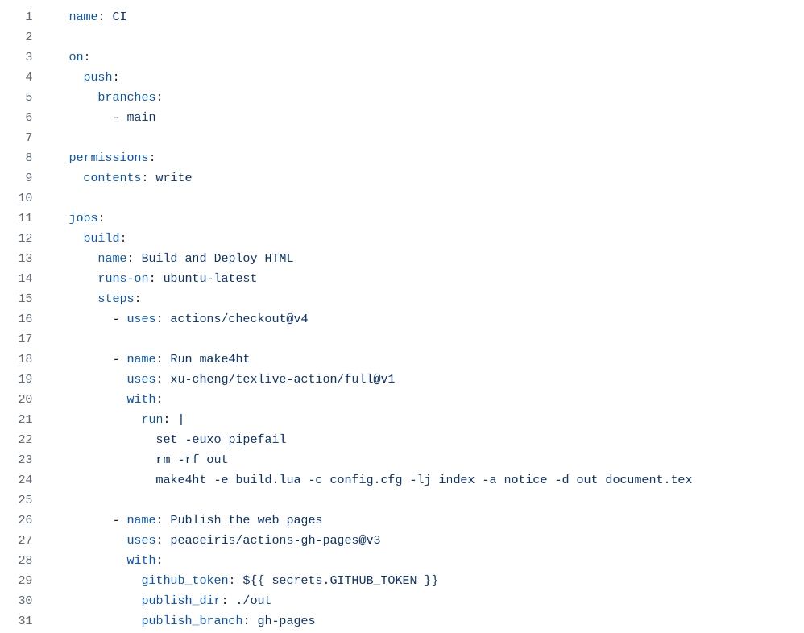
Workflow je definován v souboru .github/workflows/main.yml. Tento soubor můžete upravit pro přizpůsobení procesu sestavení, například změnou parametrů pro make4ht.
Klíčové části workflow pro sestavení a publikování HTML:
- name: Spuštění make4ht
uses: xu-cheng/texlive-action/full@v1
with:
run: |
make4ht -lj index -a debug -d out handout.tex
- name: Publikování webových stránek
uses: peaceiris/actions-gh-pages@v3
with:
github_token: ${{ secrets.GITHUB_TOKEN }}
publish_dir: ./out
Používají se dvě GitHub Actions: xu-cheng/texlive-action a peaceiris/actions-gh-pages. První umožňuje používat libovolný příkaz dostupný v TeX Live instalaci, jako make4ht nebo lualatex. Druhá publikuje obsah zadaného adresáře do větve gh-pages vašeho repozitáře, kterou GitHub Pages používá pro zobrazování statického obsahu.
Změny pushnuté do větve main spustí GitHub Actions workflow, který:
Použitý příkaz je:
make4ht -lj index -a debug -d out handout.tex
Tento příkaz vytvoří HTML soubory v adresáři out/, které jsou následně publikovány pomocí akce peaceiris/actions-gh-pages, specifikované nastavením publish_dir.
To umožňuje používat čisté URL adresy jako:
https://username.github.io/repo/
Není potřeba v URL specifikovat název souboru - GitHub Pages automaticky hledá soubor index.html. Toto usnadňuje sdílení prezentace a pomáhá předejít nefunkčním odkazům kvůli neshodě názvů souborů.
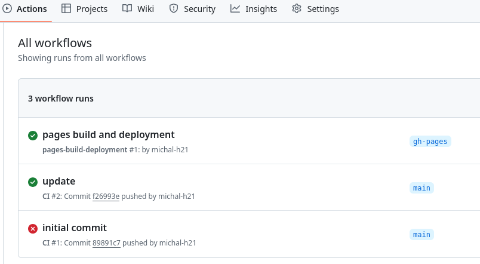
Po každém nahrání změn můžete zkontrolovat záložku Actions ve vašem GitHub repozitáři. Zobrazuje stav workflow, včetně informace o úspěšném dokončení nebo případných chybách.
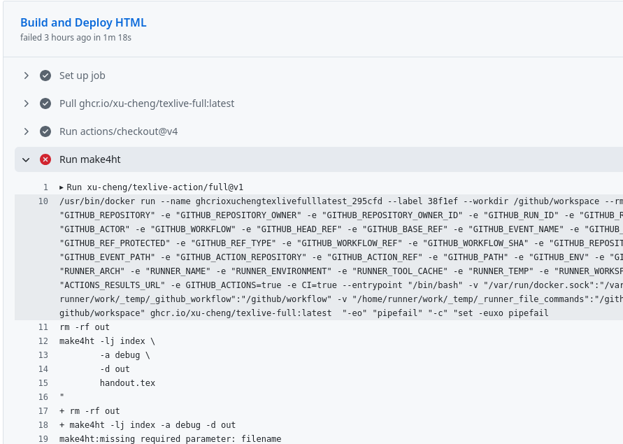
Můžete také zkontrolovat logy běhu workflow, abyste viděli, co se pokazilo. Pokud narazíte na chybu, bude zobrazena v logu a můžete tyto informace použít k řešení problému.
V tomto případě byl nesprávný název TeX souboru. Musel jsem opravit název souboru v YAML souboru GitHub Actions.
Po úspěšném dokončení workflow můžete nastavit GitHub Pages pro zobrazování obsahu větve gh-pages.
Všechny výstupní soubory vytvořené pomocí make4ht budou dostupné na
webu. Budou přístupné na adrese: https://username.github.io/repo/,
kde username je vaše GitHub uživatelské jméno a repo je název vašeho
repozitáře.
Například příklady použité v této prezentaci naleznete na adresách https://michal-h21.github.io/tex4ht-presentation/, https://michal-h21.github.io/tex4ht-booksite/
Pro využití šablon na GitHubu klikněte na tlačítko „Use this template“ na stránce GitHub repozitáře s podporou šablon.
Vytvoření nového GitHub repozitáře
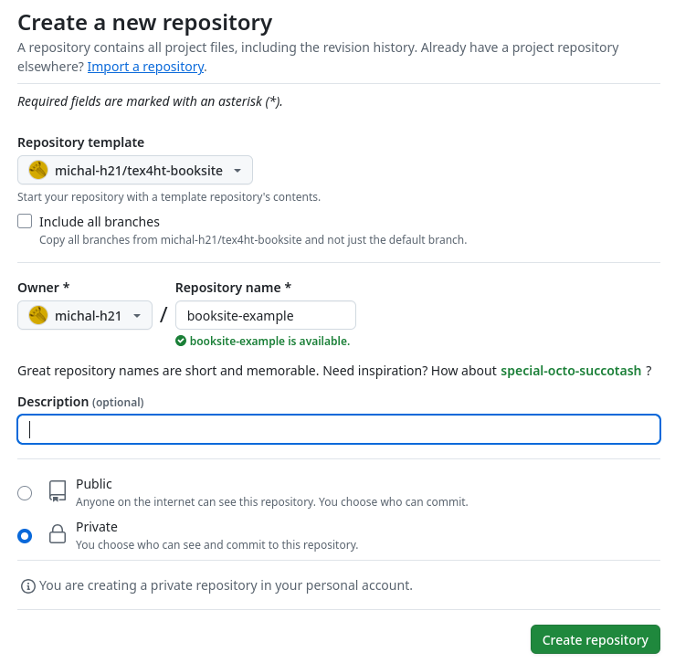
Po vyplnění dialogu pro vytvoření nového repozitáře z šablony se ve vašem účtu vytvoří nový repozitář se stejnou strukturou a soubory, jako měl původní repozitář, ovšem bez jeho Git historie.
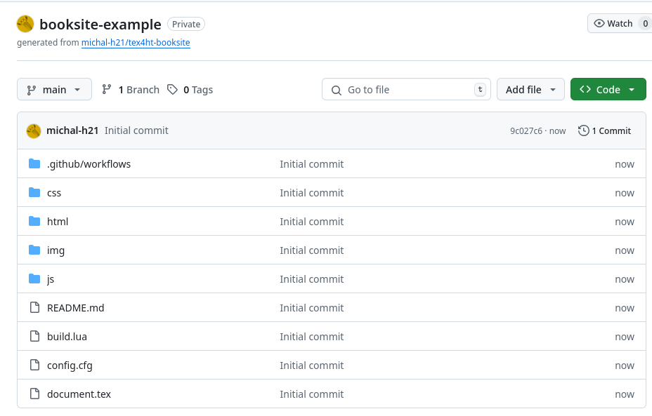
Poté nově vytvořený repozitář můžete naklonovat na svůj počítač a začít upravovat obsah souborů.
Tato šablona je navržena tak, aby umožňovala export každé kapitoly do samostatné HTML stránky. Je ideální pro publikaci knihy, dokumentace nebo skript, kde každá kapitola tvoří vlastní webovou stránku propojenou navigací.
Export kapitol na samostané stránky
$ make4ht document.tex "2"
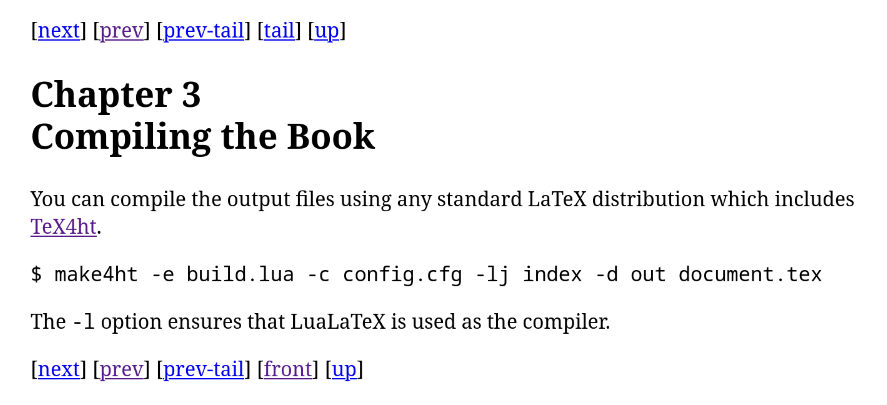
Číselné volby umožňují nastavit, od které úrovně členění textu se mají
vytvářet samostatné soubory. Například volba s hodnotou 1 způsobí, že budou
vytvořeny samostatné soubory pro nejvyšší úroveň struktury dokumentu. Hodnota
2 zajistí rozdělení i pro další úroveň, obvykle kapitoly, případně sekce, pokud typ
dokumentu kapitoly neobsahuje. Při volbě 3 se soubory vytvářejí i pro sekce, a to
i u typů dokumentů, které běžně kapitoly obsahují. Takto lze pokračovat až do
úrovně 7, kdy jsou samostatné soubory generovány i pro velmi jemné členění, na
úrovní příkazů \paragraph.
Obecně doporučuji použít volbu "2".
Ve výchozí podobě jednotlivé soubory kapitol obsahují jen základní navigaci, s odkazy na předchozí a následující kapitolu a na hlavní soubor.
Defaultně se vytváří názvy souboru ve formě:
název souboru + úroveň nadpisu + pořadí
Například:
document.html documentch1.html documentch2.html documentch3.html documentli1.html
V prvním souboru se nachází obsah, který se v dokumentu objevil před první
kapitolou, například obsah příkazu \maketitle. Dále obsahuje obsah s odkazy na
jednotlivé kapitoly. Soubor s koncovkou li se vytváří pro nečíslované kapitoly,
například rejstřík nebo seznam literatury.
Problém je, když změníme pořadí kapitol nebo přidáme novou kapitolu. Odkazy dovnitř kapitol mohou přestat fungovat.
Mějme kapitolu v češtině
\chapter{Kapitola s háčky}
Základní volba pro pojmenování kapitol na základě jejich názvu
$ make4ht document.tex "2,sec-filename" Kapitolasháčky.html
Alternativa pro čistější názvy:
$ make4ht -l document.tex "2,sec-slugname" kapitola_s_hacky.html
Volba sec-slugname produkuje názvy souborů, které jsou lépe využitelné na
webu. Veškerou diakritiku nahradí za ASCII znaky, převede velká písmena na malá,
odstraní znaky které nejsou písmena a mezery nahradí podtržítky. Pro svou
funkcionalitu ovšem vyžaduje přepínač -l, protože název se vytváří pomocí
Lua.
$ make4ht document.tex "2,sec-slugname,fulltoc"
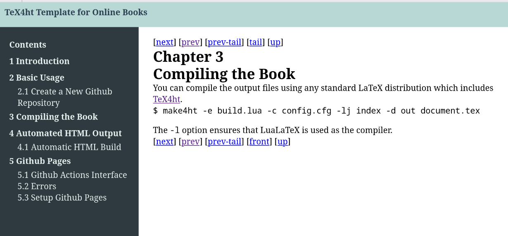
Volba "fulltoc"vytvoří na každé stránce boční menu obsahující plný obsah knihy. Díky tomu lze snadno přecházet mezi jednotlivými kapitolami. Ovšem toto menu může být poměrně rozsáhlé, pokud je v knize hodně podkapitol. Můžeme chtít zobrazit jen sekce aktuální kapitoly a podsekce ostatních kapitol skrýt. Pro to můžeme využít build soubor pro make4ht a DOM filtr collapsetoc. Další možností je využití JavaScriptu.
Obě tyto možnosti jsou zpřístupněné v následující šabloně.
Adresa:
https://github.com/michal-h21/tex4ht-booksite
Hlavní vlastnosti
Zobrazí pouze aktuální podsekce
Skryté menu
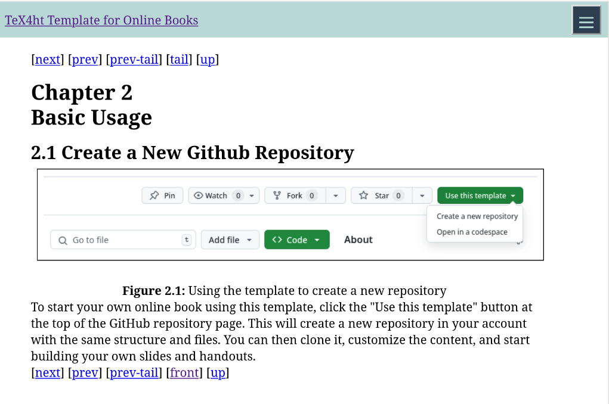
Otevřené menu
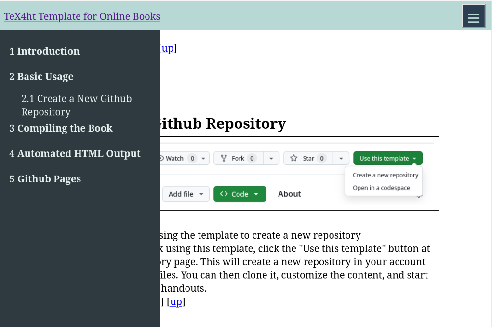
Skrytí menu je užitečné především na mobilních zařízeních s menším displejem, kde by při zobrazeném menu nezůstalo dostatek místa pro zobrazení samotného textu dokumentu. Pro zobrazení menu využíváme JavaScript, kterému se jinak snažím vyhýbat.
Většina barev v šabloně je nastavená pomocí CSS proměnných, které můžeme změnit v konfiguračním souboru.
– menu s obsahem dokumentu
– tlačítko pro schované menu
– hlavička dokumentu
– patička dokumentu
Pro každou z těchto vlastností můžete nastavit barvu popředí a pozadí přidáním -color a -background k jejich názvu.
Přidejte do konfiguračního souboru config.cfg
\Css{
body{
--maintoc-background: \#f0f0f0;
--maintoc-color: \#00AFA0;
}
}
Boční menu se změněnými barvami
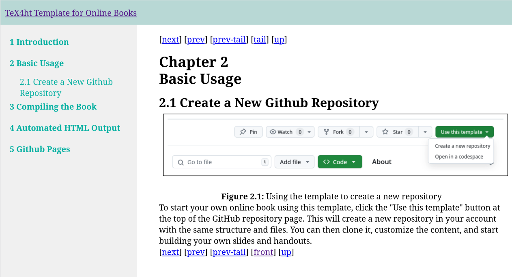
Příkaz \Css můžete vložit do konfiguračního souboru config.cfg kamkoliv
mezi \Preamble a \EndPreamble. Při použití hexadecimálního zápisu je třeba
escapovat znak # pomocí zpětného lomítka, jinak dojde ke kompilační
chybě.
Konfigurační soubor obsahuje mnoho dalších možností nastavení, ale rozsah naší prezentace nám neumožňuje všechny představit. Zároveň na této šabloně stále aktivně pracuji, takže je pravděpodobné, že se bude dále měnit. Sledujte tedy prosím její dokumentaci.
Jak můžeme blogovat s LaTeXem?
Co je statický generátor webu?
Hlavní vlastnosti
Výhodou je, že takový web můžeme umístit na téměř libovolný webový server, nemusíme řešit, zda podporuje například PHP nebo jiný systém pro dynamické zobrazování stránek. Například GitHub nabízí GitHub Pages, kde můžeme umístit stránky zdarma. V rámci GitHub Actions také můžeme spouštět generátory automaticky, nebo můžeme využít vestavěnou podporu pro generátor Jekyll.
Obecná struktura vstupního souboru
Příklad pro Markdown
--- title: Titulek dokumentu --- # Úvod Text dokumentu
Na začátku souboru je umístěný blok s metadaty dokumentu ve formátu YAML. Z obou stran je obklopený řádky obsahujícími pouze tři spojovníky. Za blokem metadat pak následuje text dokumentu.
V tomto příkladě používáme Markdown, ovšem stejný princip můžeme použít
i pro HTML soubory produkované pomocí TeX4ht. Místo Markdownu totiž
můžeme použít i HTML, které získáme z obsahu elementu <body>
LaTeXový dokument:
\documentclass{article}
\begin{document}
\title{Hello world test}
\author{Michal}
\maketitle
This is my test post.
\end{document}
Kompilujeme pomocí
$ make4ht -f html5+staticsite filename.tex
V tomto případě musíme zapnout rozšíření staticsite, které jsme připojili
za formát souboru ve volbě -f. Toto rozšíření vytvoří HTML soubor ve formátu
vhodném pro statické generátory. Soubor bude pojmenován ve formátu
YYYY-MM-DD-<filename>.
--- meta: - charset: ’utf-8’ - name: ’viewport’ content: ’width=device-width,initial-scale=1’ time: 1626619562 updated: 1627244699 styles: - ’2021-07-18-hello-world.css’ title: ’Hello world test’ --- <!-- l. 7 --><p class=’indent’> This is my test post. </p>
Soubor obsahuje různá metadata získaná z HTML souboru. Jednak se jedná
o obsah elementů <meta>, dále časy vytvoření souboru a poslední aktualizace
v číselné formě, seznam použitých stylů, titulek atd. Tato metadata můžeme
používat v šablonách použitého generátoru webů.
Šablona pro blog s generátorem Jekyll
Adresa:
https://github.com/michal-h21/testblog/
Ukázka hlavní stránky blogu
blog/ .. texposts/ .... first_post/ ...... first_post.tex .... second_post/ ...... second_post.tex .. docs/ .... _posts/ .... css
Každý příspěvek na blogu má vlastní podadresář v adrsáři texposts.
Vygenerované soubory se poté zkopírují do různých podadresářů v adresáři docs.
Například HTML soubory pro blog se umístí do podadresáře _posts a kaskádové
style do podadresáře css.
Vygenerované soubory ukládáme proto, abychom v příštích kompilacích mohli porovnat datumy změn HTML a TeX souborů. Kompilujeme poté pouze soubory, které nemají vygenerovaný HTML soubor, nebo je tento soubor starší. Tím zrychlujeme kompilaci a šetříme výpočetní čas GitHub Actions.
Tento projekt je poměrně komplikovaný a stále funguje spíše jako ukázka funkčnosti. Stále se mi nepodařilo vyřešit některé problémy s konflikty lokálních a vzdálených verzí souborů. Přesto si myslím, že může být zajímavé jej představit. Doufám, že aktuální problémy se mi brzy podaří vyřešit.
Tato šablona je určena pro prezentace, které potřebují víc než jen snímky. Umožňuje vytvořit jak samotnou prezentaci, tak podrobný handout s poznámkami a komentáři. Všechny materiály tak lze generovat z jednoho zdrojového souboru – jak pro živou prezentaci, tak pro lidi, kteří se prezentace neúčastnili.
Adresa:
https://github.com/michal-h21/tex4ht-presentation
Hlavní vlastnosti
HTML handout
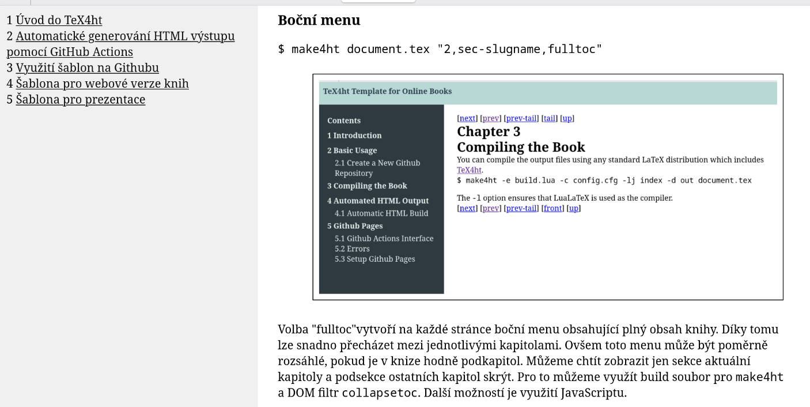
Šablona obshuje několik hlavních zdrojových souborů, každý s konkrétním účelem:
Soubory ke kompilaci
Text prezentace
Konfigurační soubory
\begin{frame}...\end{frame} se zahrnuje jak do
slides.tex, tak do handout.tex. Text mimo prostředí frame se
v prezentaci nezobrazí, ale je součástí handoutu. To umožňuje doplnit
prezentaci o podrobnější komentáře, vysvětlení nebo poznámky.
\documentclass[ignorenonframetext]{beamer}
\input{preamble} % sdílené nastavení preamble
\begin{document}
\mode<beamer>{
\input{presentation.tex}
}
\end{document}
Volba ignorenonframetext má za následek, že veškerý text mimo prostředí
frame se ignoruje. Díky tomu můžeme psát komentáře mimo slidy, které se zobrazí
pouze v handoutu. Problém je, že se ignoruje i příkaz \input, který používáme pro
vložení textu prezentace z externího souboru. Musíme proto použít příkaz \mode,
který umí lokálně přepnout mód. Pro vložení obsahu do prezentace využijeme mód
<beamer>.
\documentclass{article}
\usepackage{beamerarticle}
\input{preamble}
\begin{document}
\input{presentation.tex}
\end{document}
V handoutu můžeme pouít libovolnou třídu dokumentu spolu s balíčkem
beamerarticle. Text prezentace můžeme vložit pomocí příkazu \input.
\usepackage{hyperref}
\usepackage{graphicx}
\usepackage[czech]{babel}
...
+ další balíčky a vlastní příkazy
Použití prostředí frame a komentáře v handoutu
Základní syntaxe dokumentu používaného v souboru presentation.tex:
\begin{frame}{Název snímku}obsah snímku...\end{frame}Komentář, který bude zahrnut pouze v handoutu
Například zdrojový kód jednoho z předchozích snímků vypadá takto:
\begin{frame}[fragile]{Přehled souborů}
\begin{itemize}
\item \textbf{\texttt{slides.tex}}
\item \textbf{\texttt{handout.tex}}
\item \textbf{\texttt{presentation.tex}}
\item \textbf{\texttt{preamble.tex}}
\end{itemize}
\end{frame}
\begin{itemize}
\item \textbf{\texttt{slides.tex}} – Tento soubor slouží ke generování hlavní
prezentace ve formátu Beamer. Obsahuje to, co se zobrazuje během přednášky.
\end{itemize}
Obsah uvnitř bloku \begin{frame}...\end{frame} se zahrne do prezentace
i handoutu, ale prostředí itemize, které následuje za ním, se zobrazí pouze
v handoutu.
Sdílený obsah mimo prostředí frame
\mode<beamer|article>{
\title{Strukturovaná šablona prezentace}
\author{Michal Hoftich}
\maketitle
}
Příkaz \mode<beamer|article>{...} umožňuje zahrnout obsah, který se má
zobrazit jak v prezentaci, tak v handoutu. To se může hodit například pro název
nebo obsah prezentace.
Děkuji za pozornost!